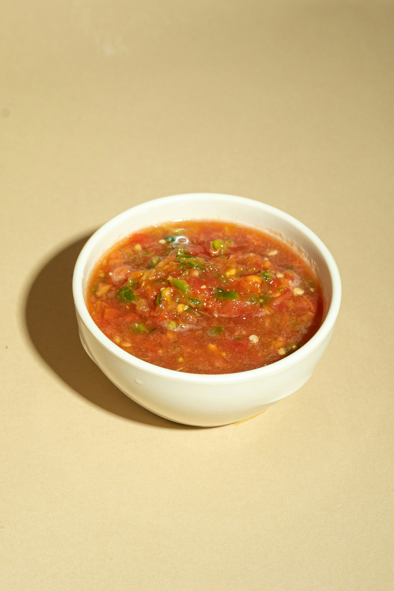

Taco Stew
Home

Easy slow cooker stew recipe
Describe the recipe
Ingredients
- Chicken breast: 1lbs
- Taco Seasoning: 1 packet
- Black beans: 1 can
- Chillie beans: 2 cans
- Tomato paste: 1 8oz can
- Diced tomatos: 2 cans
- Corn: 1 can
Steps
- Get slow cooker out
- Open corn and drain waiter with striner
- Add the corn to the slow cooker
- Open the rest of the cans and add them to the slow cooker (they do not need to be drained)
- Add taco seasoning
- Add chicken breast
- Set slow cooker to hand and set 3 hour timer
- Enjoy